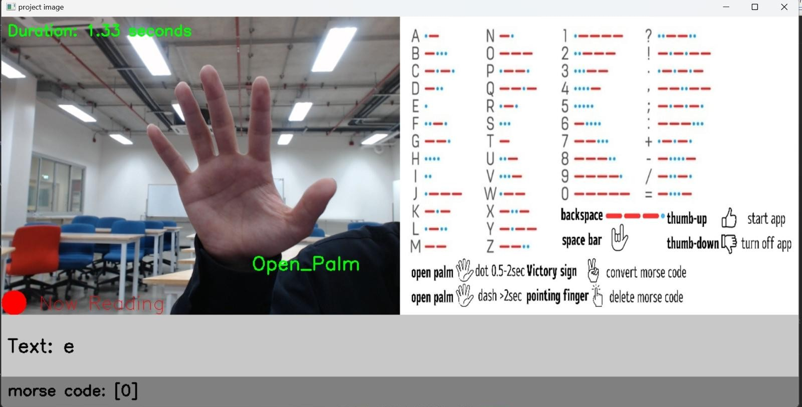

A system that lets you enter Morse code with hand gestures alone and converts it to text in real time. Built during a one-week international PBL at our sister university in Thailand by a team of five — three local students and two Japanese students — which I led.
Hold your hand up to a webcam, make a few gestures, and the system enters Morse code and decodes it into text in real time. Conceived as an input method that lets people communicate without speech or a physical keyboard, it was designed with accessibility in mind — supporting communication for people with hearing or speech difficulties. This HCI (Human-Computer Interaction) project runs entirely on a standard laptop CPU with no specialised hardware.

An international collaborative project carried out during a one-week visit to our sister university in Thailand, in my third year. We formed a single team of five — three Thai students and two Japanese students — and I led the development as team lead.
It was my first time holding technical discussions in English, and communication was far from smooth. So I broke the work down into individual features and shared a diagram of the overall structure, so every member could see both their own piece and how it fit into the whole. As a result, we managed to ship a working system within the tight one-week deadline.
Morse code's "dit (·)" and "dah (–)" are expressed through hand gestures and how long each one is held.